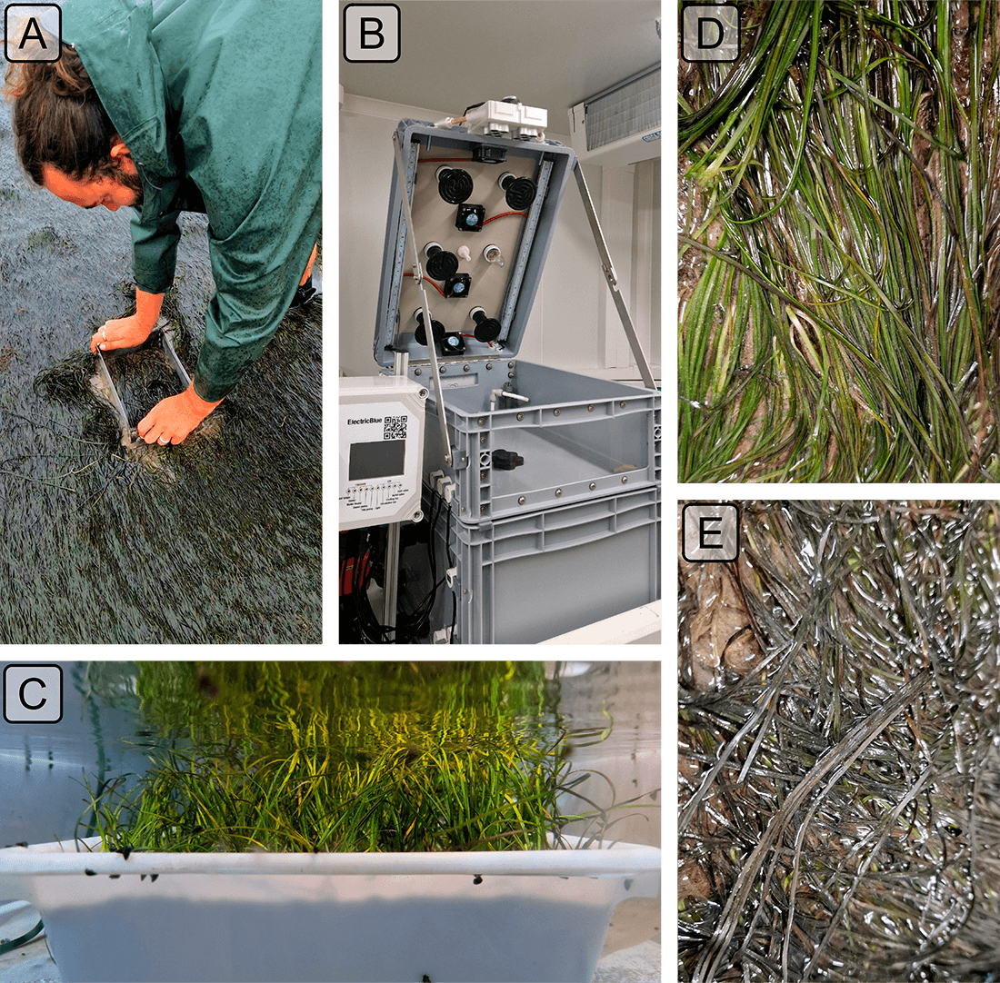
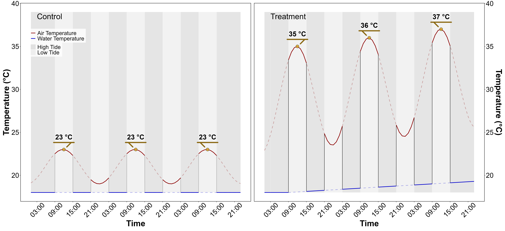
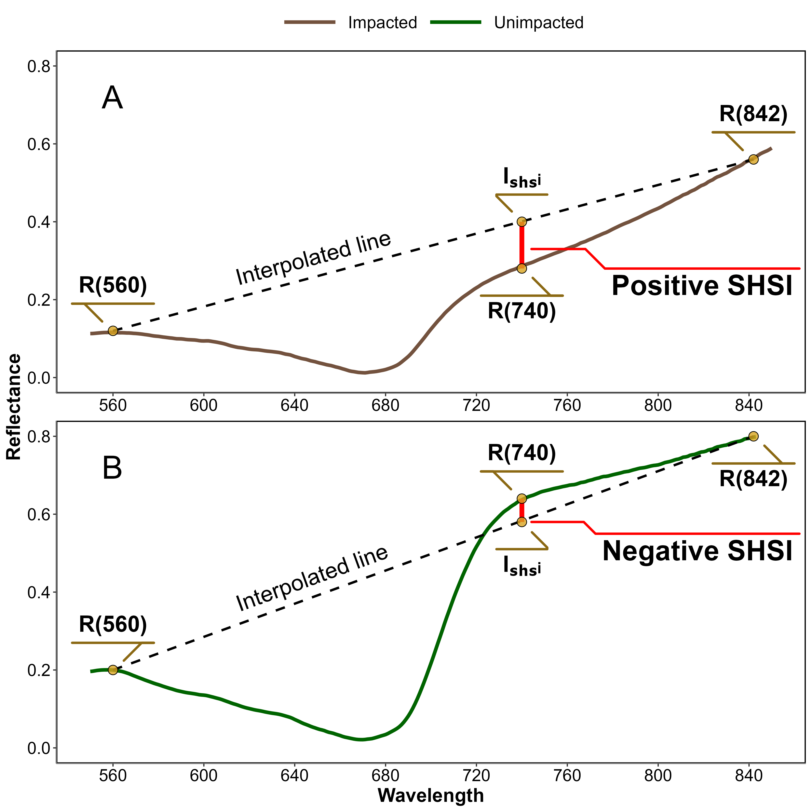
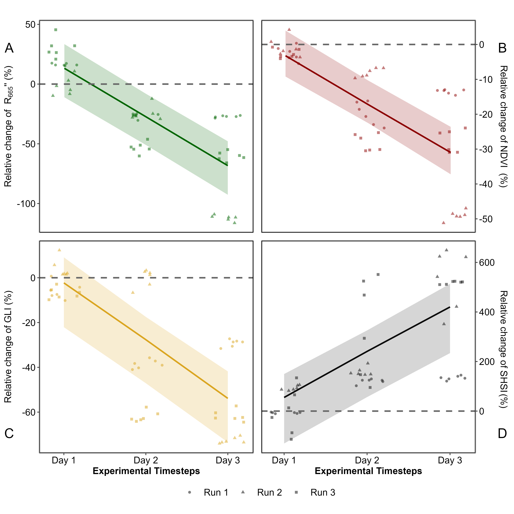
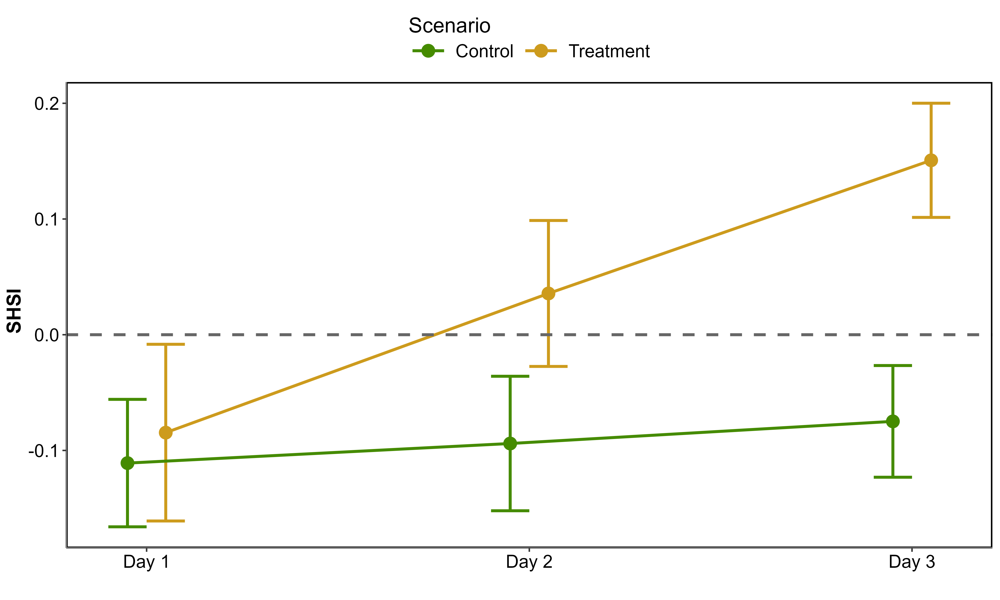
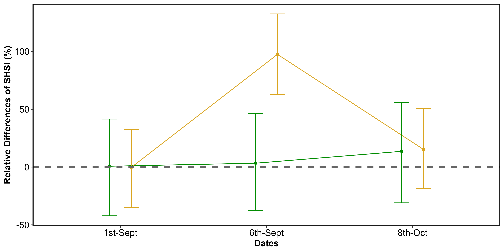
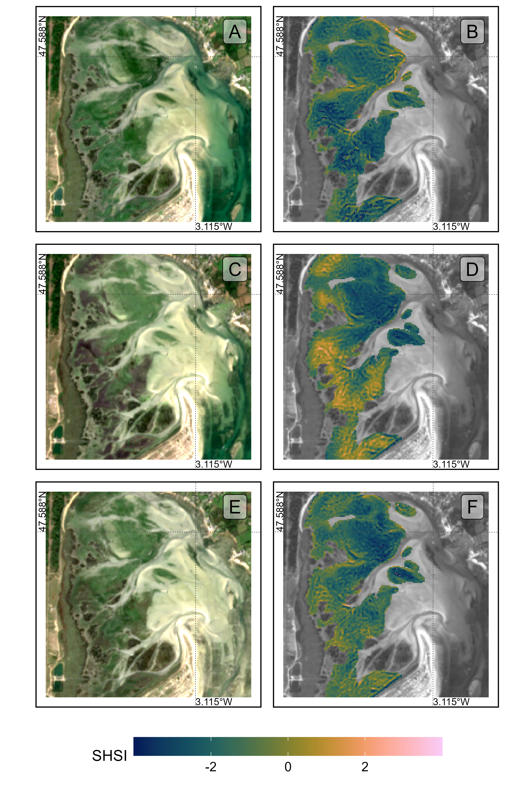
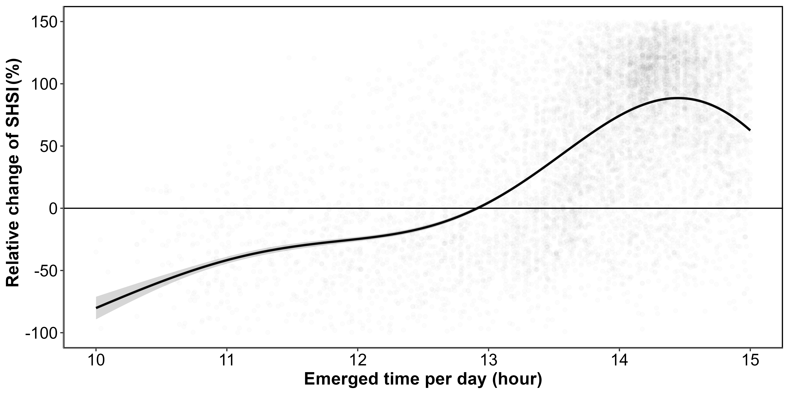
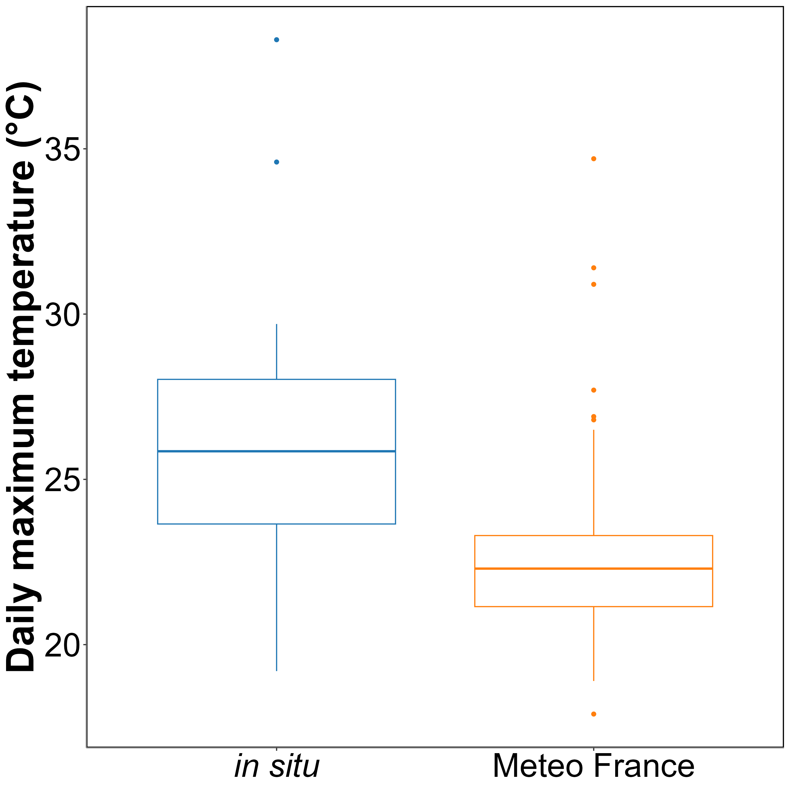

5 The impact of Heatwave on Seagrasses using hyperspectral and multispectral remote sensing
Abstract
Seagrasses play a vital role in coastal ecosystems, providing habitat, stabilizing sediments, and contributing to carbon sequestration. However, climate change has increased the frequency and intensity of heatwaves, posing a significant threat to seagrass health. This study investigates the effects of marine and atmospheric heatwaves on the spectral reflectance of the intertidal seagrass Zostera noltei. Laboratory experiments were conducted under controlled heatwave conditions, where hyperspectral reflectance measurements were taken to assess the impacts over time. Heatwaves caused a substantial decline in seagrass reflectance, particularly in the green and near-infrared regions, corresponding to the browning of green leaves. Key vegetation indices, including the Normalized Difference Vegetation Index (NDVI) and Green Leaf Index (GLI), showed pronounced reductions under heatwave stress, with NDVI values decreasing by up to 34% and GLI by 57%. A novel metric, the Seagrass Heat Shock Index (SHSI), was developed to quantify the transition of seagrass leaves from green to brown, demonstrating a strong ability to capture the effects of heatwave exposure on seagrass coloration. Multispectral satellite observations corroborated the laboratory results, revealing widespread browning of seagrass leaves during marine and atmospheric heatwave events in South Brittany, France. Notably, darkened seagrass patches were observed in intertidal areas exposed to temperatures exceeding 32°C for over 13.5 hours per day. These findings highlight the potential of spectral reflectance as a tool for detecting early signs of heatwave-induced stress in seagrasses, offering a valuable method for remote sensing-based habitat assessment, and the need for continuous monitoring of seagrass meadows under the current and future climate regimes, underscoring the potential of remote sensing to capture rapid environmental changes in intertidal zones.
5.1 Introduction
Seagrasses play a crucial role in coastal ecosystems by providing habitats and feeding grounds for various marine species, supporting marine biodiversity, and contributing to primary production and carbon sequestration (Sousa et al., 2019; Unsworth et al., 2022). Seagrasses are essential for several ecological functions, such as sediment stabilization (Infantes et al., 2022) or eutrophication mitigation by consuming nutrients (Gladstone-Gallagher et al., 2018). This justifies their use as indicators of environmental changes due to their sensitivity to water quality variations (Zoffoli et al., 2021). The interactions between seagrass meadows and their associated herbivores further enhance the delivery of ecosystem services, including coastal protection, fisheries support and provision of habitat and resources for birds (Gardner and Finlayson, 2018; Jankowska et al., 2019; Unsworth and Butterworth, 2021; Zoffoli et al., 2023). Understanding and preserving seagrass is vital for maintaining the biodiversity and productivity of coastal regions (Ramesh and Mohanraju, 2020; Scott et al., 2018).
Despite their crucial role in marine ecosystems, seagrasses face numerous threats that compromise their health and functionality. These habitats are subjected to a combination of aquatic and aerial conditions, facing impact from terrestrial and aquatic stressors. Coastal development and human activities are primary threats, reducing the available habitat for seagrasses and increasing water turbidity, limiting light penetration and photosynthesis (Waycott et al., 2009). Seagrasses are also threatened by runoff from agricultural fields and urban areas leading to nutrient enrichment. Eutrophication promotes the growth of seaweed in coastal waters, causing macroalgal blooms that compete with seagrasses for light and nutrients (Oiry et al., 2024; Thomsen et al., 2023). Pollution from industrial and agricultural sources introduces harmful chemicals and heavy metals into coastal waters, posing toxic risks to seagrass health (Bastos et al., 2023; Green et al., 2021; Zahoor and Mushtaq, 2023). Among manifold anthropogenic stressors, heatwaves (HWs), exacerbated by climate change, pose a severe threat to seagrasses, with catastrophic dieback events observed worldwide (Carlson et al., 2018; Marbà and Duarte, 2010; Moore and Jarvis, 2008; Strydom et al., 2020; Thomson et al., 2015).
Marine Heatwaves (MHWs) are defined by Hobday et al. (2016) as prolonged discrete anomalously warm water events while Atmospheric Heatwaves (AHW) are defined by Perkins and Alexander (2013) as periods of at least three consecutive days with temperatures exceeding the 90th percentile of a time series covering at least 30 years. In shallow waters, subtidal seagrass meadows are exposed to MHWs, whereas at the interface between land and ocean, intertidal seagrasses are exposed to both MHWs and AHWs. HWs profoundly impact seagrass physiology, with effects varying between species and geographic location. Widespread seagrass species such as Zostera marina exhibits high susceptibility to elevated SST during winter and spring, leading to advanced flowering, high mortality rates, and reduced biomass (Sawall et al., 2021). Similarly, Cymodocea nodosa shows increased photosynthetic activity during HWs but suffers negative effects on photosynthetic performance and leaf biomass during recovery (Deguette et al., 2022). Additionally, different populations of Zostera marina along the European thermal gradient exhibit varied photophysiological responses during the recovery phase of HWs, indicating differential adaptation capabilities among populations (Winters et al., 2011). These events intensify other stressors, such as overgrazing and seed burial, compromising recruitment (Guerrero-Meseguer et al., 2020).
The increased occurrence of extreme climate events calls for the implementation of monitoring strategies able to provide detailed and spatially explicit assessments of HWs effects on seagrass meadows. In such context, RS, whose ability to map seagrass distribution over a variety of spatio-temporal scales has been demonstrated (Davies et al., 2024a, 2024b; Oiry et al., 2024; Román et al., 2021), proved useful to study the changes in seagrass coverage caused by extreme HW event (Strydom et al., 2020). In complement to its ability to measure the spatial distribution of post-heatwave seagrass loss, we hypothesize that RS has the potential to detect more subtle changes, such as the browning of seagrass leaves. The pigment composition of plants, such as chlorophylls, carotenoids, and anthocyanins, significantly influences their spectral signature in the visible range due to their specific light absorption properties (Davies et al., 2023; Douay et al., 2022; Olmedo-Masat et al., 2020; Ustin and Jacquemoud, 2020). During senescence phase, the degradation of Chla and the unmasking of accessory pigments result in noticeable changes in leaf coloration and reflectance, including increased reflectance in the red and green wavelengths and shifts in the red-edge position (Boyer et al., 1988; Mariën et al., 2019; Peñuelas et al., 2004). Leaf browning, often observed after stress events, produces reflectance changes similar to those caused by senescence, enabling the detection of vegetation stress through RS (Boyer et al., 1988; Peñuelas et al., 2004). Spectral indices such as the Brown Pigment Index (BPI) and the Photochemical Reflectance Index (PRI) have been developed to assess changes in terrestrial plant physiological status, including oxidative and drought stress (Garbulsky et al., 2011; Skendzic, 2023). While these effects are well-documented in terrestrial plants, the spectral reflectance changes associated with senescence and stress events such as MHWs or AHWs remain poorly studied on intertidal seagrasses.
This study aims to experimentally test the hypothesis that HWs alter the reflectance of the intertidal seagrass Zostera noltei. Controlled experiments in intertidal chambers were conducted to evaluate the direct impact of heat stress on seagrass reflectance. The findings were then applied to satellite RS images, providing critical insights into the spatial extent and temporal dynamics of HW effects on seagrass meadows. By linking experimental results with large-scale observations of seagrass leaves’ browning, the study underscores the potential of RS to enhance our understanding of seagrass responses to extreme thermal events across diverse settings and timescales.
5.2 Materials & Methods
5.2.1 Laboratory Experiment
5.2.1.1 Sampling and acclimation of seagrasses
Seagrass samples were taken in summer 2024, at low tide, from a Zostera noltei (dwarf eelgrass) meadow located in Bourgneuf Bay, France (46°57’32.0”N, 2°10’37.0”W). A metal sampling box was used to sample seagrass from an area of 30x15 cm and 5 cm deep, maintaining the sediment structure and avoiding damage to seagrass rhizomes and leaves (Figure 5.1 A). This sampling box reduced the variability between each sample replicates. Samples including seagrass, sediment, meiofauna, and macrofauna, were placed in plastic trays. Keeping the entire biota allowed for natural interactions between components and reduced stress on the seagrass. Seawater was added to each tray to avoid hydric stress caused by insufficient moisture during transportation (1h drive from the laboratory). Simultaneously, seawater was sampled from a nearby site and transported to the lab, where it was filtered using a 0.22 µm nitrocellulose filter to remove suspended particulate matter. The filtered seawater was used in the acclimation tank and the intertidal chambers. The seagrasses were acclimated during one week with a water temperature of 17°C, matching the in situ temperature during sampling, and a Photosynthetically Active Radiation (PAR) of 150 µmol.s-1.m-2. (Akbar et al., 2020).
5.2.1.2 Experimental design
A tidal cycle (i.e. regularly alternating 6h of low tide and 6h of high-tide) was simulated in the laboratory using an intertidal chamber system from ElectricBlue® (Electric Blue, 2023). The transition between low tide and high tide is binary and took about 15 minutes to be completed when initiated. During the phase of high tide, a volume of 30 L of filtered seawater was pumped and circulated through the chamber (Figure 5.1 B, C). During low tide, the seagrass sample was emerged. The acclimated seagrasses were split into two subsets and placed in two independent chambers used in parallel, with one chamber used for control and the other for the experimental treatment. The intertidal chambers were equipped with LED lights that emitted low red and IR radiation. To achieve a PAR intensity of up to 400 μmol·m⁻²·s⁻¹, a filament bulb was added inside the chambers. During the diurnal phase of the experiment, the PAR was kept constant in both intertidal chambers. To follow the circadian cycle, light was turn on and off each day, at the time of sunrise and sunset, respectively.
Air temperature and water temperature were controlled inside the experiment chambers, in order to reproduce the range of variability observed in the field. Field temperature was measured using in situ sensors (T7.3 EnvLoggers from ElectricBlue®) deployed at the sampling site in August 2024. In complement, the temperature daily maxima recorded in situ were compared with measurements from the nearest Météo France weather station (Annexe A1, Section 5.6.1). The control chamber was kept at temperatures representing typical seasonal conditions, with water temperatures at 18°C and air temperatures from 19°C to 23°C, following natural daily temperature fluctuations (Figure 5.2). For the experimental treatment, the air temperature was adjusted to mimic an AHW that affected the seagrass meadow in Quiberon, South Brittany, France (47°35’40.0”N, 3°07’30.0”W), from September 2 to September 6, 2021. Air temperature in the experimental chamber was set to vary from 23°C (at night) to 35°C (daytime) during the first day of the experiment, and increase by 1°C daily during three consecutive days. Water temperature in the experimental chamber was adjusted to mimic MHW conditions, starting at the seasonal baseline (18°C) and rising incrementally by 0.5°C daily to simulate the increasing temperatures during the event. This aimed to reproduce the thermal stress experienced by the seagrass meadow during a MHW (Figure 5.2). The experiment was repeated three times to obtain replicates (hereafter referred to as “Run”).

5.2.1.3 Optical measurements
5.2.1.3.1 Hyperspectral reflectance measurements
Throughout the experiment, the hyperspectral reflectance, \(R(\lambda)\), of both the control and treatment seagrasses was measured using an ASD HandHeld 2 equipped with a fiber optic extension placed inside the chamber. The measurement set up made it possible to automatically acquire \(R(\lambda)\) without opening the chamber. An average of five \(R(\lambda)\) spectra, each with an integration time of 544 ms, was taken every minute during daytime (Malvern Panalytical, 2023). Every 10 minutes, the fiber optic was switched from one intertidal chamber to the other, in order to measure \(R(\lambda)\) in both the treatment and control. Light conditions were controlled inside of the chambers and the reflectance calibration was performed each morning at the very first moment of low tide using a Spectralon white reference with 99% Lambertian reflectivity.
5.2.1.3.2 Spectrum post-processing
A Savitzky-Golay smoothing function with a 5 nm moving window was applied to each spectrum using the “hsdar” package in R (Lehnert et al., 2017). The second derivative at 665 nm, showing the highest variability between the control and the treatment, was tested as an indicator of the spectral changes following HWs
The effect the HW on \(R(\lambda)\) was also quantified using two radiometric indices:
The Normalized Difference Vegetation Index (NDVI, Rouse et al., 1974), a proxy of Chla concentration (Equation 1.2)
The Green Leaf Index (GLI, Louhaichi et al. (2001)), a quantification of the seagrass leaves greenness (Equation 5.1)
\[ GLI = \frac{[R(550)-R(668)]+[R(550)-R(450)]}{(2 \times R(550) )+ R(668) + R(450) } \tag{5.1}\]
where \(R(550)\) and \(R(450)\) are the reflectance in the green (at 550 nm) and in the blue (at 450 nm) spectral bands, respectively. (Davies et al., 2023) Based on the observed spectral changes in seagrasses exposed to HWs, we developed a new radiometric index to better detect the radiometric caused by the HW. The browning of the leaves was characterized by substantial radiometric changes in both the green and red-edge spectral regions. The seagrass Heat Shock Index (SHSI) was introduced as the reflectance line height at 740 nm, compared to the 560 - 842 nm baseline (Figure 5.3). Namely the SHSI subtract the reflectance observed at 740 nm to the interpolated reflectance between 560 and 842 nm, so that the index is positive in the case of brown, HW-impacted seagrass leaves, and negative in the case of green, non-impacted leaves:
\[ \text{SHSI} = I_{SHSI} - R(740) \tag{5.2}\]
where :
\[ I_{SHSI} = R(560) + \tau [R(842) - R(560)] \] and :
\[ \tau = \frac{740 - 560}{842 - 560} \]
where \(R(560)\), \(R(740)\), and \(R(842)\) represent the reflectance at 560, 740, and 842 nm, respectively. These wavelengths were selected to align with the spectral resolution of satellites missions such as Sentinel-2, for broader RS application.

5.2.2 Observation of a seagrass bed impacted by a HWs
Field measurements were taken the 10th of September 2021 after an AHW and MHW in order to assess the impact of heat stress on seagrass. The study site was a seagrass meadow near Quiberon (France : 46°57’32.0”N, 2°10’37.0”W, Figure 5.4). Brown seagrass leaves were observed over large patches of the meadow alongside areas covered by green seagrass (Figure 5.5). A total of 96 Quadrat Points (QPs) were collected as georeferenced quadrat images across the meadow. These images allowed for visual assessment of vegetation type, density, and coloration. The quadrats were then divided into two categories: green seagrasses (henceforth: QPs unimpacted) and brown seagrasses (henceforth: QPs impacted), based on a visual estimation of the leaf coloration (Figure 5.4).


5.2.2.1 Temperature data and HW detection
5.2.2.1.1 Air temperature
Since 2024, Meteo France weather data has been freely and openly accessible. Hourly air temperature data from a nearby weather station (Lorient-Lann Bihoue, 47°45’46”N 3°26’11”W) was retrieved using a custom script as no API was available at the time of this study. For this station more than 395,000 hourly observations were available since 1952.
5.2.2.1.2 Water temperature
SST data from 1982 -2022 was downloaded from the Copernicus Marine Data Store (Copernicus Marine Environment Monitoring Service, CMEMS (2024)) over the Quiberon coastal area. An area of 2700 km² was extracted and analysed. This area was large enough to minimize missing values caused by cloud cover and small enough to limit the influence of offshore SST stability.
5.2.2.1.3 Heatwave detection and characterization
Marine and Atmospheric Heatwave detection was performed using the HeatwaveR package in R (Schlegel and Smit, 2018). This package utilizes the methodology proposed by Hobday et al. (2016) to detect HW events. The annual climatology of both air and water temperature was computed. HWs were defined as events when the temperature exceeded the 90th percentile of the climatology during three consecutive days. The severity of each event has been assessed using the methodology proposed by Hobday et al. (2018).
5.2.2.2 Satellite observations
Three Sentinel-2 images of the study site were selected in 2021 to assess the effect of the HW on the seagrass meadow: the first image was taken 5 days before the HW (1st of September 2021), the second image during the HW (6th of September 2021) and the third image one month later (8th of October 2021). Level-2 data was downloaded from the Copernicus open access hub (ESA, 2024a) provided by the ESA. Level-2 images consist of orthorectified surface reflectance corrected from the effect of the atmosphere using ESA standard correction (i.e., Sen2cor, ESA (2024b)).
The seagrass heat shock index (SHSI, Equation 5.2) was computed and mapped for each image. For the pixel containing a field QP (Figure 5.4), the satellite-derived reflectance was extracted, and compared before and after the HW event.
5.2.2.3 Emersion time of the seagrass meadow
The post-HW seagrass discoloration is likely related to the emersion time and intertidal topography. The spatial distribution of seagrass emersion time during low tide was estimated using bathymetric and water level data. High resolution bathymetry data (Litto3D® product) for the Quiberon intertidal meadow was sourced from the “Service Hydrographique et Océanographique de la Marine” (SHOM, n.d.). This product is a three-dimensional land-sea elevation database with 1m of spatial resolution, accurately depicting the coastal terrain of the French shores. It uses the NGF/IGN69 reference “zero”, which corresponds to the mean sea level recorded at the Marseille tide gauge between 1885 and 1897, commonly known as the “Terrestrial Altimetric Zero”.
Water level at one-minute intervals data during the HW event were downloaded from the Intergovernmental Oceanographic Commission data portal (IOC, n.d.), using measurements from the nearest tide gauge at Le Crouesty. In this dataset, the reference “zero” corresponds to the lowest astronomical tide, also known as the Hydrographic Zero.
Before calculating the emersion time, both datasets were inter-calibrated to a common altitude reference. This involved applying a correction factor to the Litto3D data to align it with the Hydrographic zero. SHOM annually publishes a document called “Références Altimétriques Marines” (RAM, SHOM, 2022), which provides the correction factors for each station of reference along the French coastline. The correction factor for Le Crouesty port data for 2022 was 2.85 m.
Once aligned, the corrected elevation was compared to water height for each pixel and each time step during the HW event. The emersion time was then calculated as the daily total time each pixel remained exposed along the duration of the AHW.
5.2.3 Statistics
General Linear Models (GLMs) were used to assess relative differences over time in response variables (Spectral Indices) with different treatments (Impacted vs Unimpacted). To analyse the effect of HW on the reflectance indices observed during the lab experiment, the relative change was modelled as function of Days (1-3: Discrete) with Replicate (henceforth Runs; 1-3: Factor) and Timestep within Run (1-6: Factor) as cross random factors. Satellite-derived indices were modelled as function of Date (1-3: Discrete) and Treatment (Impacted vs Unimpacted: Categorical). A Generalised Additive Model (GAM) was used to assess the relationship between relative SHSI change with emersion time. SHSI was modelled as a function of emersion time with a basis spline. All model parameters were estimated with a Bayesian framework using the “brms” and “RStan” packages in R to leverage the stan language (Bürkner, 2021; Carpenter et al., 2017; R Core Team, 2023; Stan Development Team et al., 2020). The response variables were modelled assuming a Gaussian distribution, with weakly informative priors (Student-T(3,0,2.5)). Model parameters were estimated using Markov Chain Monte Carlo (MCMC) sampling, with 4 chains of 5000 iterations and a warm-up of 500.
5.3 Results
5.3.1 Laboratory Experiment
5.3.1.2 Evolution of spectral metrics
Similar patterns were found for the (\(R''_{665 \, \text{nm}}\)), NDVI and GLI, where the indices started similar to the control and consistently decline over the three days of experiment (Figure 5.7 A, B and C)
At the start of the experiment (day 1) \(R''_{665 \, \text{nm}}\), NDVI and GLI in the Treatment group were on average 13% greater, 3% lower and 2% lower, respectively, than that of the Control. However, by day 2, the Treatment showed a rapid decrease of approximately 27%, 17% and 28%, eventually reaching a total decline of 68%, 31% and 54% by day 3.
Unlike the other metrics, at the start of the experiment (day 1), the SHSI for the Treatment group was on average 55 % greater than that of the Control. By day 2, the SHSI for the Treatment exhibited a rapid increase of approximately 241 %, eventually reaching a cumulative increase of 420 % by day 3 (Figure 5.7 D).
With a maximum deviation of 420 %, SHSI emerges as the most sensitive index for detecting seagrass browning. Consequently, only this index was considered for the next steps of this study.

Looking at raw SHSI values revealed clear distinctions between the Control and Treatment groups (Figure 5.8). At day 1, the SHSI of the Control and Treatment groups are comparable, with median values of -0.11 and -0.08, respectively. By the end of the experiment, seagrasses in the Treatment group exhibited a median SHSI of 0.15, consistent with their visibly darkened appearance. In contrast, the Control group retained a green appearance throughout the experiment, with a median SHSI of -0.07.

5.3.2 HW of September 2021 in Quiberon, South Brittany
5.3.2.1 Spectral changes
The Sentinel-2 images analysed in this study corresponded to acquisitions on the 1st of September 2021 and the 6th of September 2021 (Figure 5.9 A and C, respectively). The Atmospheric Heat Wave (AHW) started on the 4th of September and lasted until the 7th of September, while the Marine Heat Wave (MHW) started on the 3rd of September and ended on the 8th of September 2021 (Figure 9 B). Both air and water temperatures experienced a sharp increase. Between September 1st and 6th, the daily average air temperature rose from 22.2 to 30.8 while the daily average water temperature increased from 17.7 to 19.3 °C. During this period, the 90th percentile temperatures were 25.3 °C for air and 18.8 °C for water. The air temperature anomaly of 9.9 °C classified the AHW as a strong event, whereas the 1.7 °C anomaly in water temperature classified the MHW as a moderate event.
The Sentinel-2 image from the 6th of September, captured two days after the start of the AHW already revealed brown seagrass leaves in the true-colour composition (Figure 5.9 C). This contrasts with the reference image from the 1st of September 2021, taken before the HW began (Figure 5.9 A), where no brown patches can be observed. Before the event, all QPs appeared green on the Sentinel-2 image, with similar reflectance spectra, typical of green seagrass leaves (Figure 5.9 A and D). Their reflectance spectra showed a peak at 560 nm (in the green part of the spectra), low values at 665 nm and a high IR plateau (> 705 nm). However, on the 6th of September, QPs classified as impacted during the field campaign, showed significant differences in their reflectance spectral shape compared to unimpacted QPs (Figure 5.9 C and E). The reflectance spectra of brown seagrass were characterized by the loss of the reflectance peak at 560 nm and a decrease in the IR plateau, which was replaced by a steadily increasing slope up to 940 nm. The darkening of large areas within the meadow could also be observed in the true colour composition (Figure 5.9 C)

5.3.2.2 SHSI metric applied to Sentinel-2
Using Sentinel-2 data and the QPs, SHSI was calculated for green seagrass unimpacted by the HW (QPs unimpacted Figure 5.9 C), showing minimal changes of 3 % between the 1st and the 6th of September (Figure 5.10). In contrast, seagrass impacted by the HW and turned brown (QPs impacted Figure 5.9 C) exhibited significant SHSI changes, showing an increase of 97 % during the HW exposure (Figure 5.10). One month after the event, on the 8th of October 2021, the SHSI of unimpacted seagrass had increased by 14 % compared to the 1st of September. Regarding impacted seagrass, one month after the event, the SHSI decreased to values comparable to those of unimpacted seagrass. This change reflects an increase of 15 % compared to values recorded on the 1st of September.

Using the SHSI (Equation 5.2), we detected large darkened seagrass patches in the meadow at the 6th of September (Figure 5.11). A total of 26.9 ha of seagrass turned brown between the 1st and the 6th of September. The largest brown patch covered nearly 8 hectares. Overall, 24 % of the total seagrass meadow area showed signs of darkening between the 1st and 6th of September 2021. Comparing the spatial distribution of darkened patches with the site’s topography revealed that 94.6 % of darkened areas were located above a bathymetric level of 3.9 m (Figure 5.11, A and B). One month later, on the 8th of October, some of the previously darkened areas regained their green colour (Figure 5.11 C).

Additionally, seagrass emersion time revealed a clear relationship between the duration of air exposure and seagrass darkening (Figure 5.12). During the HW, no significant darkening occurred with less than 13 hours of daily exposure. However, above 13 hours, seagrasses began to darken, reaching peak darkening at around 14.5 hours of daily exposure.

5.4 Discussion
5.4.1 Physiological impacts of heatwaves on seagrasses
Although extensive research exists on MHWs’ effects on subtidal seagrasses, little attention has been given to intertidal habitats and even less to the interaction between atmospheric extreme events and intertidal meadows. This study initiates an exploration of how intertidal seagrasses respond to the dual influence of MHWs and AHWs, underscoring the need for further investigation in this under explored area.
In the present study, significant changes in the reflectance of seagrasses exposed to HWs were observed experimentally. These changes mainly include a drop in reflectance around 560 nm and another drop around 740 nm in the NIR part of the spectrum (Figure 5.7). The second derivative at 665 nm (R’’665), NDVI, and GLI (Figure 5.7 B, C, and D) all demonstrated a clear decline over the experimental period (days 1-3).These changes suggest a progressive reduction in photosynthetic activity as well as structural or physiological changes in the leaves, such as degraded pigmentation or altered light absorption in the treatment group relative to the control as a consequence of the simulated HW event. In contrast, SHSI shows a marked increase, reaching up to 600% for some samples by day 3 (Figure 5.7 E). This positive trend in SHSI demonstrates its effectiveness as an index to quantify darkening of seagrass. While the general trends are consistent across experimental runs, there is some variability, particularly evident in the confidence intervals, which are wider for SHSI than for the other indices. This suggests that while darkening is a consistent response, it may vary in intensity between individual samples or experimental runs. Furthermore, the contrasting magnitudes of change—especially the pronounced increases in SHSI versus the declines in other indices—highlight the sensitivity of SHSI to changes associated with seagrass darkening, which could be indicative of stress or adaptation responses specific to the treatment conditions.
The change in colour can be multifactorial and has been documented in plants under various stress conditions, including thermal stress (Dascaliuc et al., 2007; Jones and Clayton-Greene, 1992). Leaf blackening in angiosperms, as observed in Protea neriifolia, is primarily driven by oxidative processes involving the enzyme polyphenol oxidase (PPO) and the oxidation of phenolic compounds. When photosynthesis is inhibited by factors such as low light, chemical interference, or thermal stress, the plant’s production of essential carbohydrates and antioxidants diminishes, increasing oxidative stress and leading to darkening. Experimental essays have proved that low-oxygen environments and the addition of antioxidants like diphenylamine (DPA), have been effective in reducing these oxidative reactions. In the absence of photosynthesis, membrane integrity is also compromised, allowing PPO to interact with phenolic compounds, thereby accelerating darkening. Furthermore, high temperatures can destabilize membranes, especially in chloroplasts, disrupting photosystem II and impairing recovery of photosynthetic function. As Chla degrades, the ratio of pigments shift; with pigments like carotenoids becoming more prominent, leading to a darkening of the leaves.
Zostera noltei, as a species inhabiting the intertidal zone and regularly exposed to air, has developed adaptations to minimize hydric stress. For example, it exhibits smaller, narrower leaves compared to species residing lower in the intertidal zone, such as Zostera marina, which helps reduce water loss during air exposure periods (Cabaço et al., 2009). However, during intense warming events and under high light conditions, desiccation can occur in certain parts of the meadow, particularly where seagrass leaves are exposed for prolonged periods (Figure 5.12). Under such hydric stress, cellular turgor pressure decreases (the internal cell water pressure that maintains cell shape), and concentrations of ions like Na+ and Cl– can reach toxic levels. These effects can impair cellular functions, enzymatic activity, and membrane stability.
High IR reflectance in healthy plant leaves is primarily due to the internal cellular structure that scatters light. Once sunlight enters the leaf, it is diffused through various layers, particularly the spongy mesophyll, which contains air spaces and cell walls with different refractive indices. This scattering effect is intensified because there is minimal absorption in the NIR range (700 - 1300 nm), allowing light to reflect back through the leaf surface. Once the membranes (chloroplasts, thylakoids, cell walls) are destroyed due to oxidative stress, the reflectance in the Red Edge and the NIR regions of the spectrum (> 700 nm) decreases significantly (Knipling, 1970).
These unique reflectance properties of seagrasses under heat stress enable the detection of this darkening through RS techniques. The SHSI (Equation 5.2) index developed in this study leverages key reflectance bands (560, 740 and 840 nm) to detect reductions in the green and the Red-Edge regions. SHSI can be used to assess the extent and severity of darkening events across intertidal seagrass meadows from space. Current multi-spectral satellite missions, including Sentinel-2, Pleiades-Neo, WorldView-3, SkySat, and GeoSat-2 along with upcoming missions (Sentinel-2 Next Generation and Landsat Next), capture reflectance in the three wavelengths used as input for SHSI. As climate change advances, RS becomes a crucial tool for monitoring cumulative ecological impacts on seagrass meadows due to HWs. Although these physiological and structural changes occur at the cellular level over short temporal scales, their synchronously manifest across the entire meadow cause changes in large spatial extensions. RS, with its synoptic views and real-time acquisition capabilities, enables the monitoring of these rapid biological responses to natural stressors. However, cloud coverage can limit continuous observations, necessitating the integration of alternative tools, such as multi-spectral drone platforms. Combined approaches allow for precise, localized monitoring of damaged seagrass meadows immediately after extreme events, which is critical for the early detection of ecosystem degradation, quick actions for habitat conservation and targeted management strategies. Moreover, uninterrupted, multi-year data acquisition would strengthen predictive ecological models for future HW impacts, enhancing the capacity for adaptive management and supporting long-term resilience planning for seagrass ecosystems.
5.4.2 Climate change and heatwaves
The rapid global escalation of HW frequency, intensity and duration is a defining characteristic of the current climate crisis, heavily influenced by anthropogenic activities and greenhouse gas emissions (Devi et al., 2024; Russo and Domeisen, 2023). Recent research suggests that the magnitude of these events has surged in the recent decades, with climate projections predicting a continuation of this trend. For example, HWs that were once considered rare are now up to ten times more likely to occur, with some regions experiencing events three times as intense as those in the early 20th century. Cumulative indices that quantify HW intensity are based on total temperature exceedances and offer a more comprehensive understanding of event severity than average temperature alone. This is because the cumulative impact of prolonged high temperatures imposes more extensive stress on ecosystems than isolated peak temperatures (Russo and Domeisen, 2023).
From a hazard analysis perspective, the concurrent evaluation of intensity, frequency, and duration of atmospheric HWs allows for a partial understanding of their likely impacts. Models like the HW Intensity Duration Frequency (HIDF) provide insights into various HW scenarios, indicating that both short intense and prolonged moderate events present unique risks depending on the region. For instance, in the Mediterranean, the frequency of high-intensity HWs has dramatically increased, leading to severe impacts on urban infrastructure, public health, energy consumption but also to terrestrial and intertidal ecosystems, such as seagrass meadows (Mazdiyasni et al., 2019; Smale et al., 2019). Sharper increase in extreme heat events is expected in regions experiencing large daily thermic amplitude, which underscores the role of atmospheric variability in local HW dynamics. In mid-latitudes, where daily variability is expected to decrease, heat extremes may stabilize at elevated levels, reducing cold extremes while allowing for increasingly frequent hot days (Simolo and Corti, 2022).
In the ocean, similar trends were observed with MHWs, which have increased by more than 50% in the total number of days per year since the early 20th century, and projections suggest that a near-permanent state of MHW, based on nowadays baselines, could develop by the end of the century if greenhouse gas emissions remain high (Oliver et al., 2019). Events like the “Blob” in the northeast Pacific (2013–2016) have underscored the ecological ramifications of such heat anomalies, including shifts in species distributions, mass mortalities, and habitat degradation across vast oceanic regions. The physical mechanisms driving MHWs, such as altered ocean circulation and air-sea heat flux, further illustrate the interconnection of atmospheric and marine systems in the context of climate-driven thermal extremes (Smale et al., 2019).
The escalating frequency and intensity of HWs represent not only an atmospheric anomaly but a profound disruption to ecological stability across diverse ecosystems (Devi et al., 2024; Stillman, 2019). The temperature spikes associated with these events occur over very short timescales, with limited recovery periods—giving organisms little to no opportunity to acclimate to rapidly changing conditions and often exceeding their tolerance limits. The sustained high temperatures associated with both atmospheric and MHWs lead to physiological stress, habitat degradation, and increased mortality in many species, particularly those with limited thermal tolerance (Oliver et al., 2019; Simolo and Corti, 2022). Terrestrial and marine ecosystems experience shifts in species distributions, altered community dynamics, and reduced biodiversity as species are either forced to migrate or face local extinction under increasingly inhospitable conditions (Pansch et al., 2018). Similarly, in marine environments, prolonged heat stress from MHWs has cascading effects on foundational species, including corals, kelps, and seagrasses, all of which are crucial for providing habitat, food, and shelter to diverse marine life (Oliver et al., 2019; Smale et al., 2019). Seagrasses, in particular, play a vital role in carbon sequestration and coastal protection but are especially vulnerable to extreme heat events. Elevated temperatures can disrupt seagrass photosynthesis and metabolic processes, leading to reduced growth and heightened susceptibility to disease (Deguette et al., 2022; Guerrero-Meseguer et al., 2020; Sawall et al., 2021; Winters et al., 2011). With repeated HW exposure and limited recovery periods, seagrass meadows may suffer severe declines, threatening their ability to deliver key ecosystem services such as carbon storage, sediment stabilization, and habitat provision (Mazdiyasni et al., 2019). The compounded impacts of atmospheric and MHWs thus pose an existential threat to intertidal seagrass ecosystems, highlighting the urgent need for targeted climate adaptation measures to mitigate these escalating thermal stresses and preserve the resilience of these essential marine habitats (Russo and Domeisen, 2023; Stillman, 2019).
5.4.3 Seagrass resilience to heatwaves
Seagrass resilience to HWs is a complex and multifaceted issue shaped by species-specific traits, geographical location, and concurrent environmental stressors (Berger et al., 2024; Canadell and Jackson, 2021; Hatum et al., 2024). As climate change drives the frequency and intensity of MHWs, understanding these dynamics becomes crucial, especially for temperate seagrass meadows composed of slow-growing, long-lived species like Posidonia spp., Amphibolis spp., and Zostera spp. These species, unlike their tropical counterparts, tend to be highly vulnerable to abrupt environmental changes, struggling to recover from disturbances due to their slower growth and longer lifespan. In contrast, colonizing species typical of tropical regions, such as Halodule spp., Halophila spp., and Syringodium spp., demonstrate greater resilience to warming events and MHWs due to their rapid growth and more flexible life strategies (O’Brien et al., 2018).
The impact of HWs on seagrass ecosystems is further intensified by tidal variations, especially in temperate regions with large tidal ranges that can exceed 10 m, such as Mont Saint Michel Bay, France. This pronounced tidal amplitude affects intertidal seagrasses like Zostera noltei, which experience varying durations of air exposure based on their position within the intertidal zone. During neap tides, seagrasses situated higher in the intertidal zone may remain exposed for extended periods, heightening their vulnerability to AHWs. Conversely, seagrasses in the lower intertidal zone experience prolonged immersion throughout the tidal cycle, making them susceptible to extreme MHWs. As a result, both marine and AHWs can increase stress on seagrass meadows, with effects that may be intensified by tidal timing and amplitude. In our study, we observed a darkening effect in the seagrasses, despite our experimental setup simulating tides with consistent 6-hour exposure periods. In natural settings, however, bathymetry plays a significant role, and depending on depth variations, seagrasses may be exposed for even longer periods during low tides. This suggests that in situ exposure times could exacerbate the stress effects observed, as seagrasses may endure prolonged air exposure beyond what our controlled conditions have replicated.
Species like Zostera noltei display distinct seasonal patterns that become increasingly pronounced at higher latitudes (Davies et al., 2024a, 2024b). These patterns reflect the species’ adaptation to seasonal variations in temperature and light, but they also make Z. noltei particularly sensitive to extreme events depending on their timing. For instance, if a HW coincides with early developmental stages or occurs after the biomass peak when leaf senescence has begun, the impact on meadow resilience can be severe.
Environmental conditions can moderate seagrass resilience to thermal stress. Seagrass meadows located in areas benefiting from tidal cooling or positioned further from the warmer edges of their geographical ranges often experience reduced heat stress, resulting in higher shoot densities and enhanced resilience (Berger et al., 2024; Canadell and Jackson, 2021). In these cooler areas, Zostera noltei exhibits high survival and photosynthetic performance up to 37°C, though temperatures above 39°C lead to near-total mortality within days, underscoring the species’ sensitivity to temperature thresholds that may become increasingly common under climate change scenarios (Franssen et al., 2014). Moreover, the frequency, duration, and intervals between HWs significantly affect seagrass biomass and recovery; prolonged and frequent HWs reduce resilience and complicate recovery processes (Hatum et al., 2024).
The influence of other stressors, such as eutrophication and sulphide accumulation, complicates this resilience. Increased sediment sulphide levels, which often accompany nutrient enrichment, can be toxic to seagrasses, particularly under elevated temperatures that amplify sulphide toxicity. Zostera noltei, for example, has a mutualistic relationship with lucinid clams that helps detoxify sulphides. However, this interaction is compromised at high temperatures, reducing the efficacy of sulphide removal and further inhibiting nutrient uptake, growth, and overall resilience (De Fouw et al., 2022).
In a simulated HW experiment on Zostera noltei, resilience was evident under short-term moderate stress, with no significant changes in photosynthetic performance or survival (Franssen et al., 2014; Massa et al., 2009). However, prolonged or more intense heat events posed a greater challenge, highlighting the species’ limited capacity to withstand chronic thermal stress. The long-term impact of HWs is especially evident in changes to SC. Before the HW event on 1st September 2021, impacted seagrass patches exhibited higher SC than non-impacted areas. However, during the event on 6th September, the SC in the impacted patch experienced a sharp decline on impacted patches. By 8th October, one month post-event, the SC of impacted seagrasses, initially higher, had fallen below that of non-impacted seagrasses (Figure 5.10). The observed decrease in seagrass cover on 6th September was primarily due to leaf darkening. This darkening influenced the satellite NDVI measurements used to estimate SC (Zoffoli et al., 2020), creating an apparent decrease in SC in the impacted patch when, in reality, it remained stable (Figure 5.5). The bias introduced by RS in this instance reflects a limitation in accurately capturing true seagrass cover during stress events. It was only after the HW that leaves began to detach, leading to an actual decline in seagrass density. This delayed physical response underscores how extreme events can compromise seagrass resilience, leaving previously robust patches in a weakened state compared to less disturbed areas (Figure 5.10).
On a physiological level, seagrasses possess coping mechanisms such as photoprotective responses and heat-responsive gene expression, including the activation of heat-shock proteins (HSPs) and other stress-related genes (Hughes and Stachowicz, 2004; Reusch et al., 2005). Zostera noltei, in particular, has shown differential gene expression responses to heat stress, with a variety of genes involved in protein folding, membrane stability, and reactive oxygen species scavenging playing critical roles. However, the rapid pace of climate change raises concerns about whether these adaptations can keep up with the increasing frequency and severity of thermal events (Franssen et al., 2014).
5.4.4 Big picture
Given the combined pressures of temperature extremes, eutrophication, and other anthropogenic impacts, targeted management strategies are essential for enhancing seagrass resilience (Loarie et al., 2009). Approaches such as reducing local stressors, cultivating heat-tolerant genotypes, and investing in restoration initiatives are vital to supporting these ecosystems in a warming climate. Although challenges remain, the adaptability and potential resilience of certain seagrass species offer hope for their persistence amid accelerating ecological shifts. In particular, regions that can buffer seagrasses from extreme stressors or provide cooler refuges may play a critical role in maintaining these valuable ecosystems in the face of global climate change (Canadell and Jackson, 2021; De Fouw et al., 2022).
Seagrass meadows function as foundational components of coastal ecosystems, sustaining diverse marine communities by providing essential habitats, nursery grounds, and trophic resources for fish, invertebrates, and migratory birds (Zoffoli et al., 2023). Their dense canopies stabilize sediment and protect shorelines from erosion, an increasingly crucial role as sea levels rise due to climate change (Folmer et al., 2012; Gacia et al., 1999). Recurrent HW events, which induce physiological stress like leaf darkening, can severely diminish seagrass density, thereby reducing their effectiveness in sediment stabilization and wave attenuation, ultimately increasing the risk of coastal erosion (Calleja et al., 2007). From a biodiversity perspective, degradation of these meadows disrupts intricate food webs, impacting commercially significant fish and shellfish populations that rely on seagrass for sustenance and refuge. This loss can reduce local fisheries’ productivity and threaten the livelihoods of coastal communities (Unsworth and Cullen-Unsworth, 2014). Furthermore, as seagrass meadows decline, their capacity to act as a blue carbon sink—critical for climate mitigation—also diminishes, inadvertently contributing to increased atmospheric carbon levels (Armitage and Fourqurean, 2016; Samper-Villarreal et al., 2020)
5.5 Conclusion
This research has investigated the effects of both marine and atmospheric HWs on the intertidal seagrass Zostera noltei, a critical component of coastal ecosystems facing increased thermal stress due to climate change. By examining reflectance and pigment composition under controlled experimental conditions and validating these findings with satellite data, we aimed to understand how extreme heat events affect seagrass health and assess the potential of RS to monitor these impacts effectively. Our findings reveal that HWs lead to substantial declines in seagrass reflectance, particularly in the green and NIR regions, likely driven by pigment degradation and structural damage. This change is reflected in significant reductions in key vegetation indices such as NDVI and GLI. The Seagrass Heat Shock Index (SHSI), developed in this study, successfully detected seagrass darkening, a visible symptom of HW stress, demonstrating the viability of spectral monitoring to capture early-stage impacts of heat events on intertidal ecosystems. By connecting our findings with satellite data, we have also confirmed the broader spatial impact of HWs on seagrass meadows in Quiberon, France. The correlation between HW exposure and darkening of seagrass suggests that RS, combined with targeted field observations, can enhance our understanding of ecosystem responses to climate-driven thermal events. These results advocate for integrating continuous spectral monitoring into conservation strategies, as it can help predict the resilience of these ecosystems and guide adaptive management practices. As climate change accelerates, with a predicted increase in the frequency and intensity of HWs, the vulnerability of intertidal zones to such events will likely intensify compromising meadows survival and their ecosystem functions. This study not only underscores the importance of seagrass meadows in coastal ecosystems but also highlights the urgency of protecting these critical habitats. Future work should focus on refining RS tools and examining the cumulative effects of repeated HW events to support the conservation of intertidal seagrass meadows in a warming world.
5.6 Annexes
5.6.1 Annexes A - Temperatures of the experiment

On average, in situ temperatures were 3 ± 3.2°C higher than those recorded by Meteo France. Additionally, temperatures recorded by Meteo France were more stable than those from the in situ sensors, likely due to the sheltered and shaded location of the Meteo France equipment. This difference was used to adjust HW temperatures measured by Meteo France to better reflect the conditions experienced by the seagrasses.